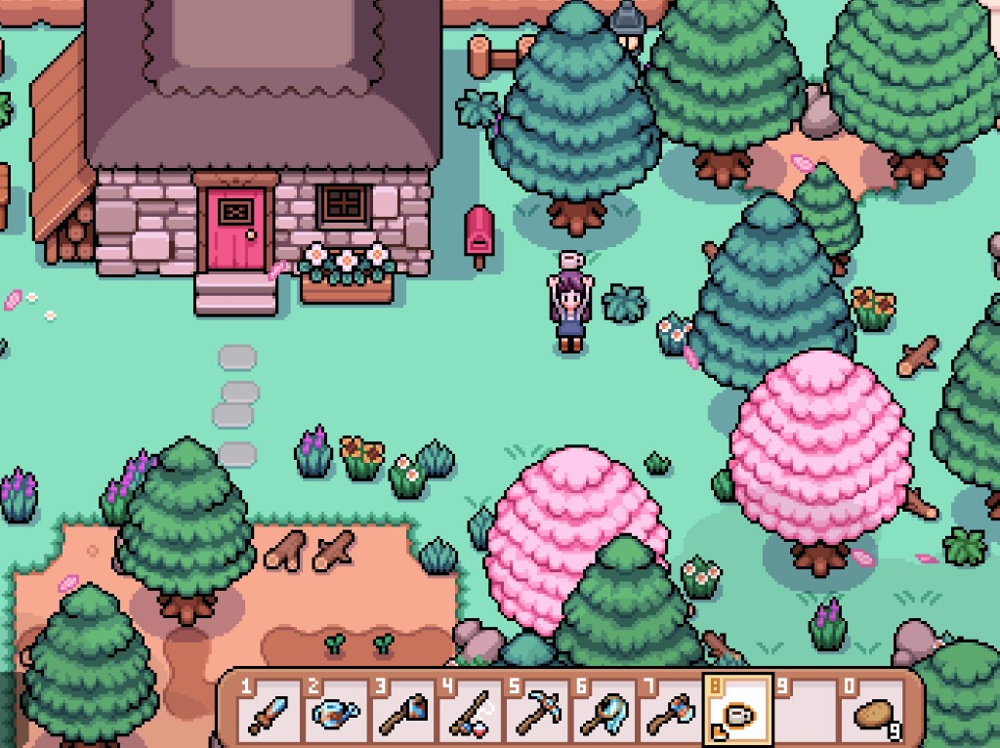
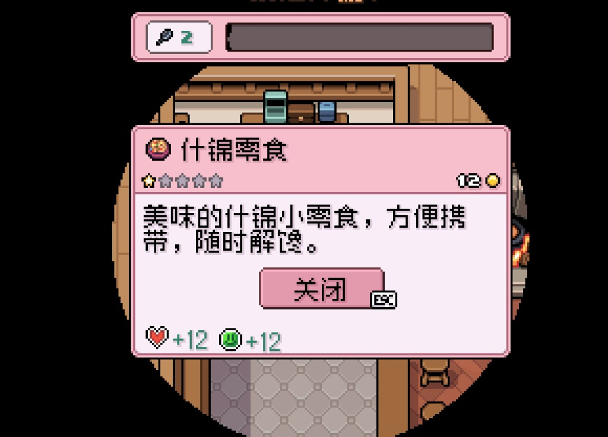
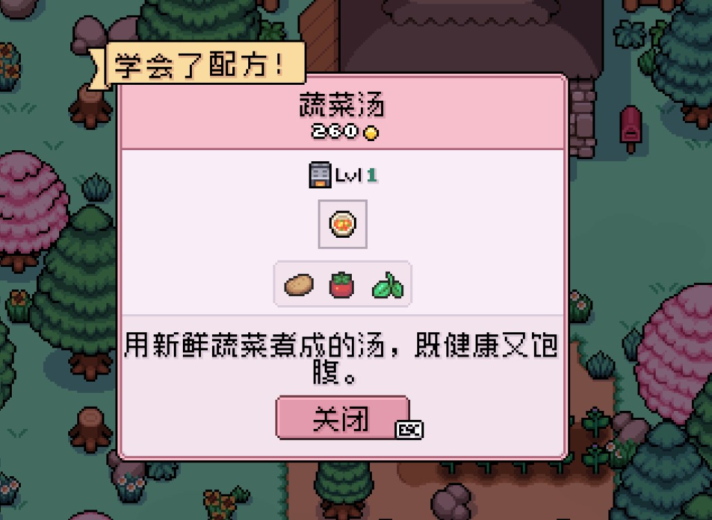
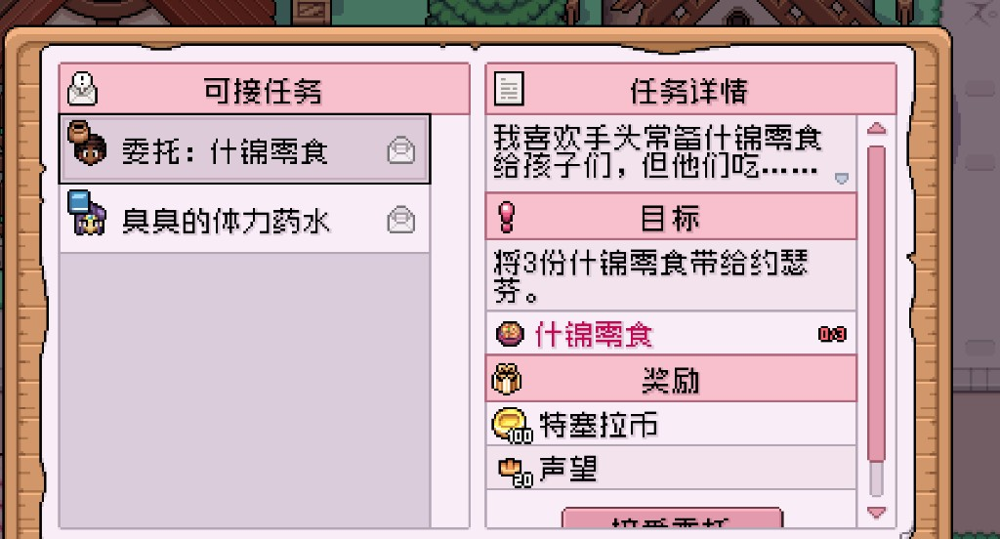

Quick answers
- Never sell the last edible forage.
- Eat before the bar hits empty underground or mid-clear.
- Tea and simple cooked food help once recipes unlock.
- Sleep is also recovery—do not hero to 2am every night.
- Inn meals are emergency buttons, not breakfast every day.
Snack rule from our save
We sold every leek-like forage once, then stood empty-handed. After that: two snacks always on the hotbar.
Cooking when it helps
Trail mix and veggie soup style recipes turned spare forage into reliable bars. Cook when you already have ingredients—do not force a kitchen montage.
Safe to skip
- Gourmet cooking trees in week one
- Mining on zero food
Screenshots from our save
Real Fields of Mistria shots from our first-season play. Captions in English; in-game UI language may differ.




FAQ
Passed out anyway?
You will recover—pack food tomorrow.
Best early food?
Whatever you already have; perfection later.
Unofficial fan guide. Not affiliated with NPC Studio. Verify details in your game version.